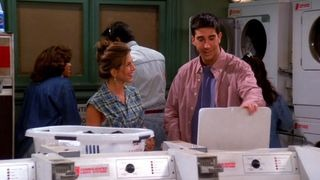

Aproveite o máximo de entretenimento
Assine agora
ENTRAR
Assine agoraFriends
.jpg)
Uma das séries de maior sucesso da TV e com várias indicações aos prêmios Emmy e Globo de Ouro, ""Friends"" é uma comédia inteligente e divertida sobre a vida e os sentimentos de um grupo de amigos que mora em Nova York. Da Bright/Kauffman/Crane Productions.
Estrelando: Jennifer Aniston, Courteney Cox, Lisa Kudrow, Matt LeBlanc, Matthew Perry, David Schwimmer, Courteney Cox Arquette
Episódios
 1. The One Where Monica Gets a Roommate
1. The One Where Monica Gets a Roommate
Depois que Rachel abandona o noivo no altar, ela vai morar com Monica e descobre...
 2. Aquele da ultrassonografia
2. Aquele da ultrassonografia
Ross não gosta do sobrenome que ex-esposa escolheu para o bebê. Rachel descobre ...
 3. Aquele com o dedão
3. Aquele com o dedão
Uma companhia de refrigerantes dá 7.000 dólares à Phoebe quando ela encontra um ...
 4. Aquele com George Stephanopolous
4. Aquele com George Stephanopolous
Um entregador acidentalmente entrega uma pizza destinada a George Stephanopoulos...

5. Aquele com o detergente de roupas da Alemanha Oriental
Ross ajuda Rachel a lavar roupa e considera o evento um primeiro encontro. Joey ...
6. Aquele com o bumbum
Joey ganha uma grande oportunidade no cinema quando é contratado para ser dublê ...
 7. Aquele com o blecaute
7. Aquele com o blecaute
Phoebe está prestes a cantar suas músicas deprimentes no Central Perk, quando ac...
 8. Aquele onde Nana morre duas vezes
8. Aquele onde Nana morre duas vezes
Monica e Ross estão de luto pela avó. Chandler questiona sua sexualidade.
 9. Aquele em que o vira-latas escapou
9. Aquele em que o vira-latas escapou
O primeiro jantar de Ação de Graças de Mônica queima quando todos vão até o telh..
 10. The One With The Monkey
10. The One With The Monkey
O grupo faz e desfaz um pacto para comemorar o Ano Novo. Ross compensa sua solid..
 11. Aquele com a Sra. Bing
11. Aquele com a Sra. Bing
A mãe de Chandler, que é escritora de romances, vai a Nova Iorque para uma visit..
 12. Aquele com a dúzia de lasanha
12. Aquele com a dúzia de lasanha
Monica dá a Paolo uma das doze lasanhas que ela fez para a tia, que não as quer ...
 13. Aquele com os peitinhos
13. Aquele com os peitinhos
Chandler acidentalmente vê Rachel andando pelo apartamento sem roupa depois do b...
 14. Aquele com as balas em forma de coração
14. Aquele com as balas em forma de coração
No Dia dos Namorados, Ross e sua namorada acabam indo ao mesmo restaurante que S...
 15. Aquele com o cara doidão
15. Aquele com o cara doidão
Monica cozinha uma refeição gourmet para o dono de um restaurante à procura de u...
 16. Aquele com duas partes – Parte 1
16. Aquele com duas partes – Parte 1
Phoebe se sente ignorada quando Joey se interessa pela irmã gêmea dela. Durante ...
 17. Aquele com duas partes – Parte 2
17. Aquele com duas partes – Parte 2
Quando Rachel torce o tornozelo sem ter um plano de saúde, ela convence Monica a...
 18. Aquele com o poker
18. Aquele com o poker
Rachel é entrevistada para concorrer a um cargo como assistente de compras na Sa...
 19. Aquele em que o macaco fugiu
19. Aquele em que o macaco fugiu
Todos saem à procura de Marcel, que fugiu do apartamento enquanto Rachel cuidava...
 20. Aquele do ortodontista safado
20. Aquele do ortodontista safado
Rachel e Barry voltam a ficar juntos, apesar de ele ainda estar noivo de Mindy, ..
 21. Aquele com a Monica falsa
21. Aquele com a Monica falsa
Quando o cartão de crédito de Monica é roubado, ela decide pegar o ladrão.
 22. Aquele do caso esquisito
22. Aquele do caso esquisito
Depois de perder a virgindade com ela, o namorado de Monica revela que ainda est...
 23. Aquele do nascimento
23. Aquele do nascimento
Carol entra em trabalho de parto enquanto Ross, Phoebe e Susan ficam presos em u...
 24. The One Where Rachel Finds Out
24. The One Where Rachel Finds Out
Durante a festa de aniversário de Rachel, Chandler deixa escapar que Ross está a...